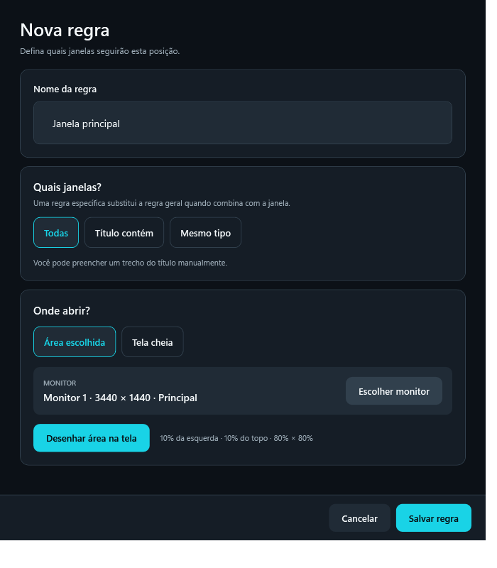
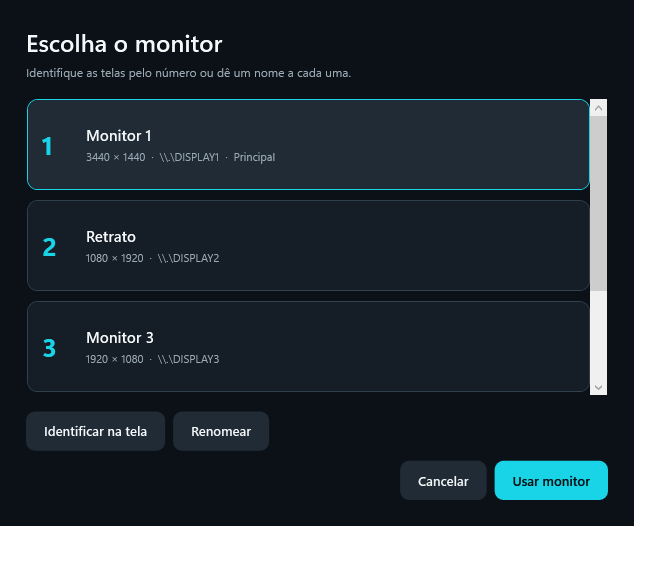

▣
Escolha o programa
Selecione uma janela aberta para o Firaw identificar o aplicativo e criar um perfil.
ORGANIZAÇÃO INTELIGENTE PARA WINDOWS
Escolha onde cada programa abre. Desenhe a área no monitor, salve uma vez e deixe o Firaw cuidar das próximas janelas.

COMO FUNCIONA
A configuração é visual e pode ser diferente para cada programa. Você decide o tamanho, o monitor e as exceções.
Selecione uma janela aberta para o Firaw identificar o aplicativo e criar um perfil.
Escolha o monitor e marque diretamente na tela onde as janelas devem aparecer.
Defina exceções para janelas especiais, por título ou pelo tipo da janela.
SEUS MONITORES, SEUS NOMES
O Firaw mostra cada monitor em uma lista clara, com número, resolução e indicação da tela principal. Você pode renomear cada um para reconhecer seu espaço de trabalho de imediato.

JANELAS ESPECIAIS
Crie uma regra para reconhecer a janela de apresentação separada do Microsoft Teams e abrir essa janela no monitor inteiro. As outras janelas do Teams continuam seguindo a área que você definiu para o programa.
A regra depende de como o Teams abre e identifica a janela de apresentação. Configure pelo título ou tipo da janela e ajuste depois de testar em uma chamada.
NO SEU COMPUTADOR
Os perfis e nomes dos monitores ficam salvos localmente. O Firaw usa as informações das janelas para reconhecer os programas e aplicar suas regras, sem exigir conta.
PRONTO PARA ORGANIZAR?
Disponível para Windows x64. O envio à Microsoft Store está em certificação; a página da loja ficará disponível após a aprovação.